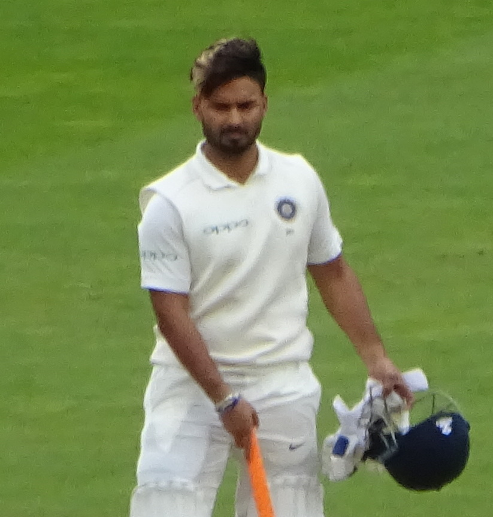

वेलिंगटन टेस्ट: शतक से चूके शुभमन गिल, भारत ने बनाई मजबूत बढ़त
वेलिंगटन टेस्ट में कप्तान शुभमन गिल 98 रन बनाकर आउट हुए। तीसरे दिन का खेल समाप्त होने तक भारत ने पहली पारी में चार विकेट पर 486 रन बनाकर 118 रनों की बढ़त हासिल कर ली है।

वेलिंगटन के बेसिन रिजर्व ग्राउंड पर खेले जा रहे पहले टेस्ट की पहली पारी में भारतीय कप्तान शुभमन गिल अपने शतक से मात्र दो रन से चूक गए। जैकब डफी की गेंद पर बोल्ड होने से पहले गिल ने 146 गेंदों में 9 चौकों और 2 छक्कों की मदद से 98 रन बनाए। इस पारी के साथ वह टेस्ट क्रिकेट के 90 के फेर में आउट होने वाले 11वें भारतीय कप्तान बन गए हैं।
तीसरे दिन का खेल समाप्त होने तक भारत ने पहली पारी में चार विकेट पर 486 रन बना लिए हैं और न्यूजीलैंड पर 118 रनों की बढ़त हासिल कर ली है। केएल राहुल ने 136 रनों की शानदार शतकीय पारी खेली, जबकि ऋषभ पंत 55 रन बनाकर खेल रहे हैं। इससे पहले न्यूजीलैंड ने अपनी पहली पारी में 368 रन बनाए थे।
और पढ़ें
 खेल
खेलजसप्रीत बुमराह ने वेलिंग्टन टेस्ट में रचा इतिहास, न्यूजीलैंड के कप्तान टॉम लैथम को दोनों पारियों में किया शून्य पर आउट
वेलिंग्टन टेस्ट में भारतीय तेज गेंदबाज जसप्रीत बुमराह ने न्यूजीलैंड के कप्तान टॉम लैथम को दोनों पारियों में शून्य पर आउट किया। ऐसा करने वाले वह तीसरे भारतीय गेंदबाज बन गए हैं।
 खेल
खेलऋषभ पंत ने जड़ा शानदार शतक, न्यूज़ीलैंड के खिलाफ भारत की स्थिति मज़बूत
न्यूज़ीलैंड के खिलाफ मुकाबले में ऋषभ पंत ने शतकीय पारी खेलते हुए 153 गेंदों में 128 रन बनाए, जिससे भारत ने बड़ी बढ़त हासिल कर ली है।
 खेल
खेलकेएल राहुल ने वेलिंगटन टेस्ट में जड़ा शानदार शतक, SENA देशों में रचा इतिहास
भारत के सलामी बल्लेबाज़ केएल राहुल ने न्यूज़ीलैंड के खिलाफ वेलिंगटन टेस्ट में 136 रनों की पारी खेली। इसके साथ ही वे SENA देशों में टेस्ट शतक जड़ने वाले पहले भारतीय ओपनर बन गए हैं।

खेलऋषभ पंत ने वेलिंगटन में जड़ा शानदार शतक, बनाए कई बड़े रिकॉर्ड
न्यूजीलैंड के खिलाफ वेलिंगटन टेस्ट में शतक लगाकर ऋषभ पंत SENA देशों में शतक जड़ने वाले पहले भारतीय विकेटकीपर बन गए हैं। उन्होंने टेस्ट करियर का नौवां शतक पूरा किया है।